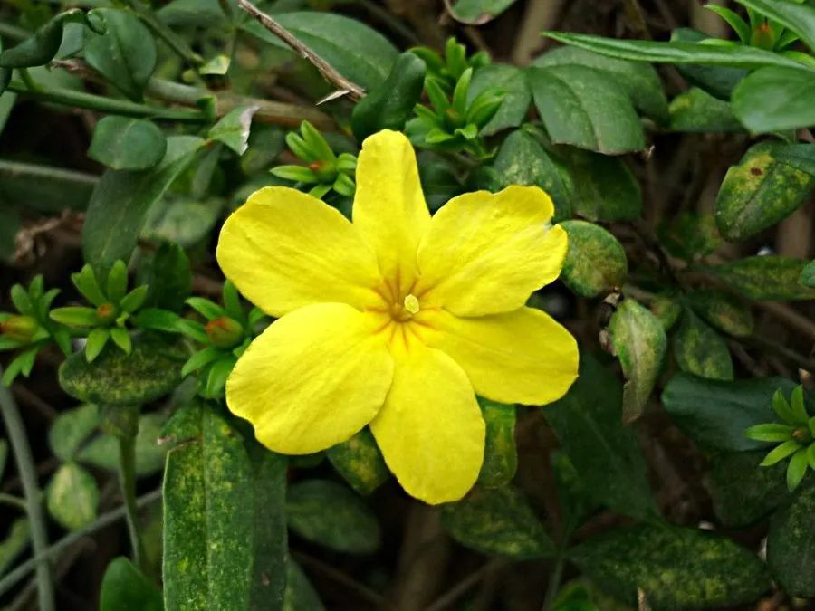

灌木与花木 · 植物界
云南黄馨 Jasminum mesnyi

中国西南常见的常绿灌木，枝条细长下垂，早春开金黄色花朵、花心带红晕，是庭院与堤岸的常见花木。
- 分类
- 门被子植物门纲木兰纲目唇形目科木犀科属素馨属
- 栖息环境
- 海拔 2000 米以下的山坡、河岸与庭院，喜光耐寒耐旱
- 地理分布
- 中国云南、四川、贵州等地，南方各地广泛栽培
- 保护级别
- 暂无评估；中国未列入国家重点保护野生植物名录
物种志
云南黄馨为常绿灌木，高可达 3 m，枝条细长、拱形下垂，小枝四棱形、绿色；叶片对生，三出复叶，小叶卵形至椭圆状披针形，边缘具短睫毛。花期 2–4 月，花单生于去年生枝叶腋，花冠漏斗状、黄色，花径 3–4 cm，花瓣常为重瓣，花心略带红晕；浆果椭圆形，成熟时紫黑色，少见结果。
云南黄馨原产中国云南、四川、贵州等地，中国南方广泛栽培，喜光、耐寒、耐旱，对土壤要求不严，在堤岸、墙边与庭院中都能生长。因枝条细长下垂、早春开金黄色花朵，常被种植于庭院、花坛、假山与堤岸，形成垂枝花景；与迎春花外形相似，但云南黄馨为常绿灌木、花较大且花心带红晕，迎春花为落叶灌木、花较小。枝条可编扎造型，也是优良的护坡与垂吊绿化植物。
形态与习性
- 株高可达 3 m，枝条拱形下垂
- 花期2–4 月，花黄色
- 果期栽培条件下少见结果
- 光照喜光，稍耐阴
- 水分耐旱，怕积水
- 土壤适应性强，各类土壤均可生长
- 主要用途庭院与堤岸绿化、护坡与垂吊绿化、枝条编扎造型
趣味知识
- 云南黄馨枝条细长下垂，早春开金黄色花朵，花心还带一点红晕。
- 云南黄馨是常绿灌木，而迎春花是落叶灌木，二者外形相似但不同种。
- 云南黄馨开花早、花期长，是西南地区重要的早春观花灌木。
- 云南黄馨的枝条能接触地面生根，因此常用于堤岸护坡与垂吊绿化。